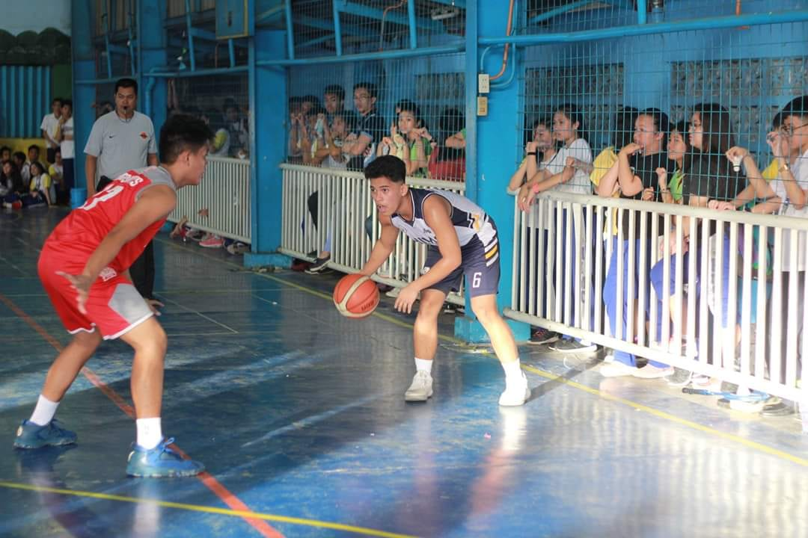
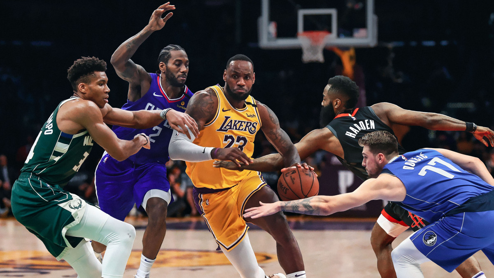
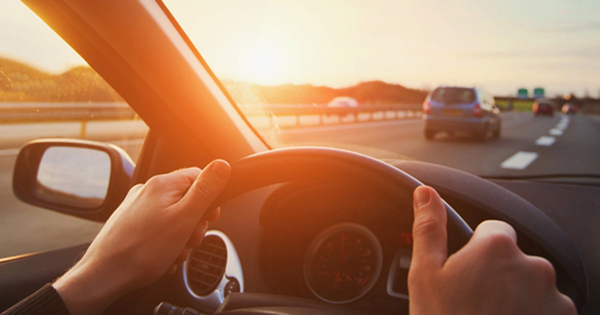
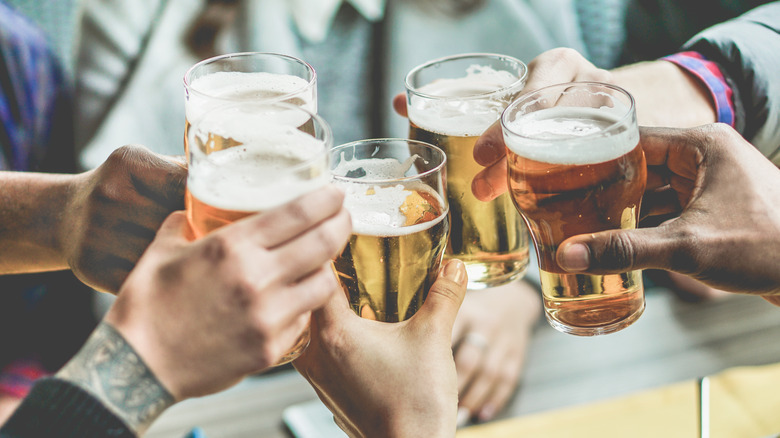
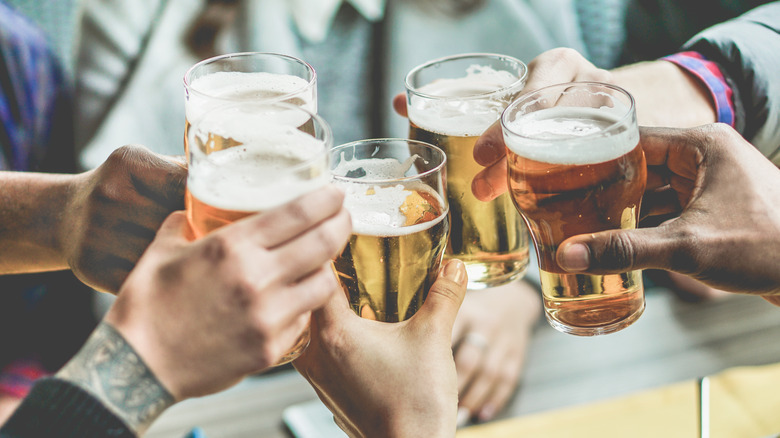

SKILLS HOBBIES INTEREST
SKILLS

My SKILL, My skills, i think my skills is not amazed at all. 1 1 I think my skills when im playing basketball. 2 skills in playing basketball like different moves while im playing. 3 Skills in playing basketball like always shoot when i take a 3points. 4 Skills in playing basketball like i have ability speed and strenght. 5 I think my others skills is what i learned to do. 6 because you can have different skills by practicing what you want. 7 You can have a skills while you learning. 8 My different skills is to be a good student. 9 different skills for me is im a good to my parents. 10 Also i have skills when im playing computer games. 11 it Like if you play a fps games and u always win for the game you have skills. 12 skills to ablity have a sure win a game. 13 I think my others skills is to wake up earlier and wake up on time. 14 Because I don’t wwant being late in anything like when I have class I don’t have to be late. 15 When I have a training in basketball we have traing at 5am I never late and if we have a games I never late i hate baing late. 16 I think my other skills is to drink beer because my alcohol tolerance is high. 17My other skills is rapping hiphop when I was a child. 18 I want to master a skills in technology like beaing programmer why im IT students. 19 My other skills is other sports like bowling and soccer. 20I hope my skills is evolve like to learn so much in my course.


HOBBIES


My HOBBIES, , My hobbies is basketball since i was child. 1 i started play basketball when i was 9yrs old. 2 I know sports basketball when i was a child because my father is always watching nba in our tv. 3 I remember when im only elem my father teach me how to play a basketball. 4 when i learned how to play a basketball i play for my school. 5 But not only basketball is my hobby. 6 when I was a kid I like to rap and I love to play hip hop music that’s why im always rapping when I was a kid but now I cant do it anymore.7 my others hobbies isa playing computer games since im a child a play game what I want. 8 may top hobbies is basketball my entire highschool life I play basketball for my school. 9 It so fun to do your hobbies and playing for your school. 10My dream when I was elementary is to play basketball for university school. 11 My other hobby is driving iwant to drive anywhere it make me happy. 12 when I was a kid I like to watch a car racing that’s why I like to drive a car. 13 Also I want to drive a bigbike motor but idont have 13 My other hobbies is boxing. 15 My other hobbies is eating so much. 16 Now in my college life my hobbies still playing basketball and its help to have a healthy lifestyle. 17 But sometimes is my hobby is drinking beer with my friends 18 My top hobbies is basketball I want to play again for school like UE 19Also my hobbies is doing betting it make me happy when I win but depress when it lose .20 Sometimes my hobbies is to study to learn things.
 

INTEREST


My INTEREST , 1I do have a lot of interest.2 im interested in travelling. 3 I want to go or travel every parts of the philippines.4 Also I want to travell the world go to others country. 5 Im interested in other culture of others country. 6 I want to learn different language. 7 Also im interested in different foods of other country I want to taste different foods from other country. 9 Also im interested in hiking. 10 go to different mountain go hike and camping. 1112 When I was a kid im so amaze who creating computer games that’s I why im interested to learn to create a computer games and im interested in networking. 13 Also im interested in cooking I want to learn to cook. 14 So I can serve a delicious food for my family and to my friends. 15 Also im interested in different sports i want to watch live games sports in personal like football and others outdoor sports. 16 Im also intested in cars like I want to collect a sports car. 17 Also im into big bike motorcycle I want collect big bikes I want to ride and go to different country same in cars. 18 Also Im interested in designing my own house cause I like a beautiful house beautiful interior house. 19 Also Im interested doing business when im highschool im do thinking what i have a business someday. 20 I hope someday I can do what I want and what im interested about and bocomes dream come true. 21 Having a beautiful family and happy family.